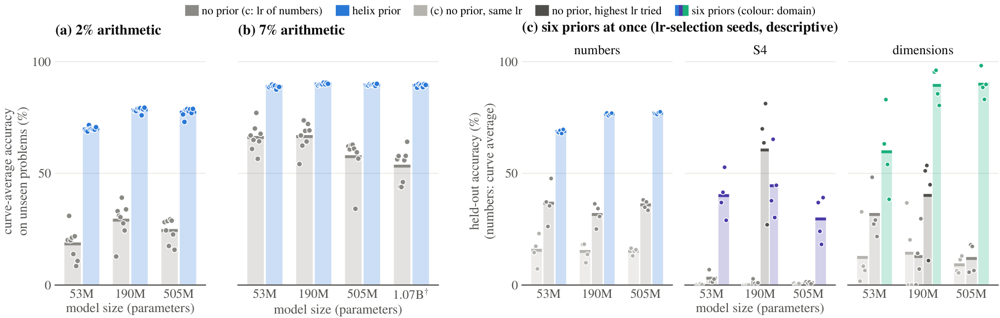
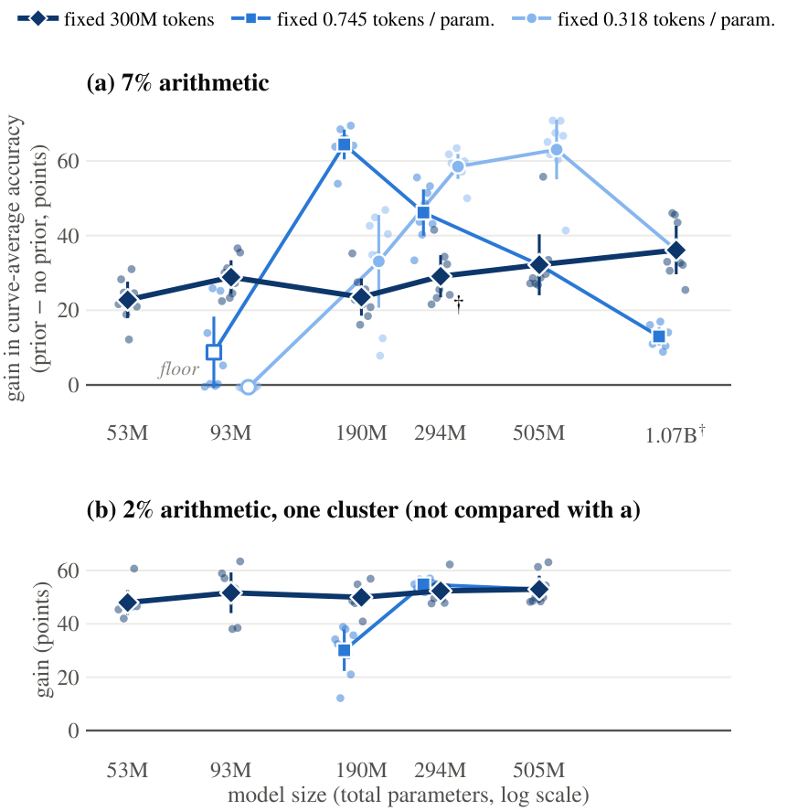
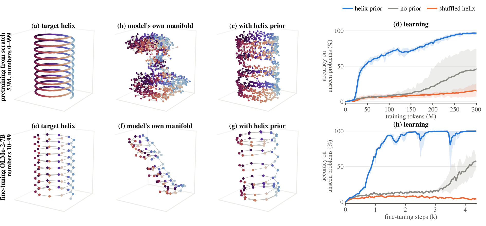
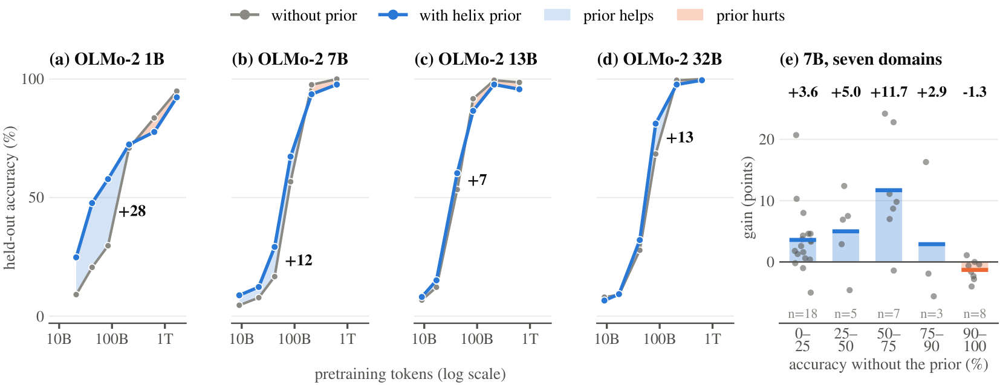
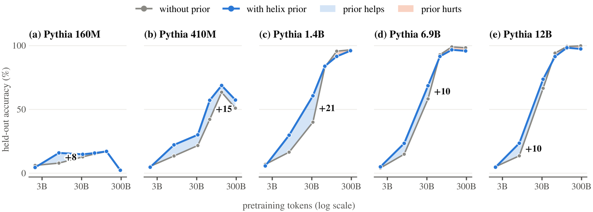

Faster learning · pretraining from scratch
When pretraining data contain little arithmetic, the prior decides whether a model learns it within its training budget
With only 2% of the pretraining text being addition, and every model at its own best learning rate, the prior lifts the average accuracy on new problems over training from 18% to 70% (8 seeds). At one shared learning rate, a model without the prior ends at 17%, and one with the prior on numbers in web text ends at 96%. With 7% addition every model learns, and the prior makes it happen sooner, unless the helix is shuffled.
Setup: a 53M-parameter OLMo-2-style model pretrained on 300M tokens of FineWeb-Edu with addition problems (operands 0–999); accuracy on held-out problems. With each model at its own best learning rate and 7% arithmetic, the prior reaches 90% 3.7× sooner at 53M and 3.9× sooner at 190M over 8 seeds.
Model size
The prior helps at every model size we pretrained, from 53M to 1.07B parameters
With each model at its own best learning rate, the prior keeps its advantage at every size we tested. At 1.07B it raises the average accuracy over training from 53% to 89%, by 36.1 points (8 of 8 seeds). How the gain changes with size depends on what is held fixed: with the same amount of training data, the gain increases with model size (nine sizes); when larger models also get proportionally more data, there is no consistent trend.


The two results fit together because the gain varies mainly with the number of training tokens: within one size it first rises and then falls, peaking roughly between 70M and 130M tokens with 7% arithmetic, and with more tokens the model without a prior catches up.
Several priors at once · pre-registered, 8 fresh seeds
Six priors trained together improve all six concepts, and the model reaches the final accuracy of a model without priors after only 8–30% of training
With the six priors together, all six concepts beat the model without priors at every one of the six learning rates we tried; against the best of these rates, the average accuracy over training rises by 5.8 to 46.9 points (table below). The model also learns faster: it reaches the final accuracy of the best model without priors after only 8–30% of training, in every seed, and gets 90% of the way there from chance 2.1 to 5.0 times sooner. At 1.07B parameters, the largest model we train, they raise accuracy on all six concepts in every seed, by 49.9 points on numbers and 45.0 on dimensions, at no language-modelling cost on average (below).
| Concept | No priors | Six priors | Gain (points) | At the end | Speed-up | Together vs. alone |
|---|---|---|---|---|---|---|
| Numbers | 23.6% | 70.5% | +46.9 | +33.9 | 3.9× | −0.5 |
| Dimensions | 47.3% | 81.2% | +33.9 | +30.7 | 4.4× | +13.5 |
| Cities | 86.3% | 92.6% | +6.3 | +3.7 | 2.6× | +1.7 |
| Countries | 89.3% | 95.1% | +5.8 | +3.7 | 2.1× | +1.2 |
| Torus | 63.0% | 85.0% | +22.0 | −3.0 | 4.1× | +4.4 |
| Grid | 41.0% | 60.6% | +19.7 | −1.6 | 5.0× | +7.4 |
Average accuracy on new problems during training (53M model, 8 new seeds, pre-registered); without priors, each concept uses its best of six learning rates. Gain: how many points the six priors add; the bar shows the 95% interval over the seeds, and the gain is positive in all 8 seeds for every concept. At the end: the gain at the end of training. Speed-up: how many times sooner the six priors get 90% of the way from chance to the final accuracy without priors. Together vs. alone: the six priors minus that concept's prior alone (both at learning rate 2×10⁻³); the grey line is zero. Except for numbers, the targets encode the answers.
With the six priors at 10⁻³, the language-modelling loss carries 71% of the gradient norm during the window, and the final validation loss, 1.213 bits per byte, lies within 0.4% of the best model without priors.
Kept on until the end, the six priors lead on all six
Kept on until the end of training, the six priors give the highest end-of-training accuracy of all our runs on all six manifolds, above the model without priors even at its best rate in each seed (8 of 8 seeds each); the torus ends at 99.8%. Their final validation loss, 1.2112 bits per byte, is 0.1% above that of the model without priors at its best rate for this loss and below that of the window run.
End-of-training held-out accuracy with the priors on from 5% of training to the end, and its lead in points over the model without priors at its best learning rate in each seed. Post hoc, 8 seeds.
Trained together, the priors help each other
At 2×10⁻³, joint training costs at most 0.5 points on any manifold relative to its prior alone and lifts dimensions by 13.5 points (8 of 8 seeds). Interference is thus not detected for any of the six. The lift grows after the priors switch off: at the end of training the six lead the prior alone by 25.0 points on dimensions (7 of 8 seeds, one tie) and 11.7 on the torus (8 of 8; post hoc). This lift needs the geometry of the torus and grid priors, which are structurally similar to dimensions. Without them, joint training lifts dimensions by only 1.5 points over its prior alone (12.0 points less than with them, 7 of 8 seeds), and with their targets shuffled at the same strength, the lift disappears (8 of 8 seeds).
Why the prior alone falls behind. What the dimensions prior alone loses after the window is not the representation. In two re-drawn pairs of runs, the lattice coordinates of the items stay linearly decodable at layers 2–6 in both models (R² 0.96–0.99), and at the answer position layers 5–6 decode the correct answer at every saved checkpoint, also on the questions the model with the prior alone answers wrongly; the loss lies in the step from this state to the output token.
Not through later practice. About three-quarters of the lift survives removing the torus and grid problems as soon as the window closes: the six then still end 19.1 points above the dimensions prior alone (7 of 8 seeds), 77% of the lift, although the model stops answering torus and grid questions within about 400 steps. A rerun that replaces the removed problems in place by text of the same length, so that every other problem keeps its position, retains 82% (8 of 8 seeds; 95% interval 0.65–1.06); the change of position had no measurable effect (−1.3 points, 95% interval −7.7 to +5.4). Inside the joint model, dimension answers use a code shared with the torus: at the answer position, removing the torus answer subspace at layer 5 cuts dimensions accuracy by 44–46 points, against 1.5–5 with the dimensions prior alone, and removing the dimensions subspace cuts the torus by 44–45 points (against 7–10). These reads use two re-drawn pairs of the runs that keep the problems, so it is an inference that this code is why the lift survives.
Training a single prior also raises the CKA of structurally similar domains to their own targets, although their tokens do not overlap: the grid prior alone raises the CKA of dimensions by 0.16 and the dimensions prior that of the grid by 0.18, and the city and country priors raise each other's by 0.22 and 0.24 (8 of 8 seeds each; post hoc). CKA measures how close a domain's representations are to its target geometry (1 = identical).
The gains do not shrink up to 1.07B parameters
At 1.07B, the largest model we train, the six priors raise accuracy averaged over training on all six concepts in every seed, by 49.9 points on numbers, 49.2 on the grid, 45.0 on dimensions and 17.4 on the torus, each against the model without priors at its best learning rate, with the learning-rate range closed on both sides. The gains do not shrink with model size: from 190M to 1.07B they stay at 50–51 points on numbers (51.3, 51.4, 49.9), 43–48 on dimensions (48.1, 42.8, 45.0), 37–49 on the grid (42.9, 37.1, 49.2) and 17–20 on the torus (20.4, 18.2, 17.4). Every one of the 21 models with the six priors, in the window or kept on until the end, is above every one of the 63 models without priors, at any learning rate and seed, on numbers, dimensions, the torus and the grid: averaged over training, at least 75.3, 80.0, 86.0 and 68.5% against at most 32.3, 64.6, 76.5 and 49.1%. In all 54 comparisons (3 sizes × 3 seeds × 6 concepts) the model with priors is higher, and in every seed it also ends higher on numbers, dimensions, the torus and the grid. At 1.07B this comes at no language-modelling cost: at the same learning rate the bits per byte are equal on average (0.0%; higher in 3 of 4 seeds), while at 190M and 505M the six cost a little (+0.3% and +1.4%, 4 of 4 seeds each), and at no size does any of five zero-shot benchmarks move by more than 0.6 points.
At 190M, the speed-up and the joint lift seen at 53M hold in all three seeds: the model reaches the best final accuracy without priors after 8–36% of training on numbers, dimensions, the torus and the grid, and the lift on dimensions is +10.4 points; at 1.07B it is preliminarily positive (+6.6; +5.9 at the end, 3 of 3 seeds), and at 505M it does not hold (−1.5). These runs keep the 53M recipe; at 1.07B, a one-seed check puts the learning rate of the six-prior runs on a plateau (Paper Appendix J).
Faster learning · fine-tuning OLMo-2-7B
With the prior, an early OLMo-2-7B checkpoint reaches 90% on two-digit addition about five times sooner
With the helix prior, an early OLMo-2-7B checkpoint reaches 90% on two-digit addition about 5× sooner (in 30-epoch runs), and its numbers settle into a clean helix.

Method
How it works: an extra loss pulls a concept's representations towards a target shape
Take the hidden states H of a concept's items (for example, the numbers 0–999), choose a target shape F, and add one minus their linear CKA, a similarity score between 0 and 1, to the training loss. CKA ignores rotation and overall scale, so the loss is low only when the representation itself has the target's shape, with each item at its own target point.
| Concept | Target | Setting | Effect of the prior | Note |
|---|---|---|---|---|
| Numbers | helix | pretraining 53M, 2% arithmetic | 18.4% → 69.9% | 8 seeds |
| fine-tuning OLMo-2-7B, 9B tokens | 90% ≈ 5× sooner | 30-epoch runs | ||
| Months | circle | fine-tuning 7B, 210B tokens | +21.6 points | step task |
| Weekdays | circle on answer states | fine-tuning 7B, 210B tokens | +32.6 points | transfer across equivalent shifts |
| Dimensions, cities, countries, ℤ₆² group, grid sums | lattice, spheres, torus, grid | pretraining 53M, six priors together | +5.8 to +33.9 points | 8 fresh seeds; targets carry the answers |
| Exponent vectors | coordinates | one-layer toy, 6.7% of the table | 0/5 → 5/5 reach 95% | target encodes the whole table; 0 of 5 in each of 28 settings without a prior |
The settings in the table above differ, so its rows are not comparable. In the screen of all 36 domains, among targets that do not encode the answer the geometry helped only numbers (42B) and months (210B).
All 36 concept domains (fine-tuning screen)
42B / 210B: gain of the prior in held-out accuracy (points) when fine-tuning OLMo-2-7B at that checkpoint (3 seeds); shaded: robust gain or loss. Task step: “k steps after x”, where the target carries no answer; order: which of two items is larger or earlier; anchor: which of two items is closer to a third, where the target coordinates imply the answers. f/c: accuracy without the prior at floor / ceiling. Decodable: number of eight final models in which the target coordinates can be read out linearly.
Right time
A model's number representations form long before it can add, and the prior helps while it is still learning
Number representations form long before the ability to add, and the prior helps while the model is still learning the task; once the model has learned it, the prior stops helping.
Representations come before abilities
In OLMo-2-7B the helix of numbers reaches half its final strength between 9B and 21B pretraining tokens; few-shot addition only between 84B and 210B.
When the prior helps
In fine-tuning, the gain is largest while the model is learning the task. In pretraining, starting the prior at 5% of training is faster than starting at the first step or at 20%, and costs far less language-modelling quality than starting at the first step.

For every OLMo-2 size the largest gains are +6.9 to +28.1 points, and Pythia shows the same pattern: the prior speeds up a computation the model is forming but does not create one it is not forming.
The same window in Pythia 160M–12B

Right geometry
A helix with its numbers shuffled does not help, and each part of the helix contributes
The same loss with the helix positions assigned to the wrong numbers does not help: it slows fine-tuning and lowers pretraining accuracy. Within the helix, every part contributes.
A shuffled helix does not help
Same dimensionality, loss scale and gradient, but the coordinates go to the wrong numbers.
Which parts of the helix matter
- The whole helix, not its partsFourier spikes without separability give no gain; separability alone gives 25–40% of the helix's gain, about as much as a digit code.3 seeds
- The more regular, the betterAdding noise to the helix lowers the gain monotonically; targets less regular than the model's own geometry (CKA ≈ 0.70) hurt.3 seeds
- Matched to the computationThe helix helps addition and subtraction and hurts multiplication; with digit tokens, which already give place value, the prior adds little.
| Target | Tests | 1B · 42B | 7B · 42B | 7B · 84B |
|---|---|---|---|---|
| helix | the full manifold | +29.5 | +10.8 | +9.9 |
| sep_ce | separability only | +7.3 | +4.1 | +4.2 |
| digit | a place-value code | +10.0 | +3.6 | +2.8 |
| helix_coarse | neither (control) | −1.5 | −3.5 | −3.7 |
| helix_nonsep | Fourier spikes without separability | −2.4 | −5.4 | −7.7 |
| Tokens | a + b | a − b | a × b |
|---|---|---|---|
| 42B | +13.0 | +18.9 | −11.8 |
| 84B | +12.3 | +20.5 | −11.2 |
| 210B | −3.5 | −1.5 | −8.8 |
Paper Table 2. Gain over none in accuracy points (3 seeds); blue: significant gain, orange: significant loss (p<0.05, paired t-test). (a) Targets that isolate parts of the helix, OLMo-2 1B and 7B at the given checkpoints (training tokens). (b) helix on OLMo-2-7B fine-tuned on a mixture of addition, subtraction and multiplication; each column is that operation's own test set.
Right place
Apply the prior to the numbers themselves, wherever they appear, even in ordinary web text
For numbers up to 999, the prior works about as well on numbers shown on their own as on the numbers inside the addition problems, and it still works on numbers in ordinary web text, which needs no knowledge of the task data. A shuffled helix of the same strength, on numbers shown on their own, hurts.
Limits
What the prior does not do
It speeds up learning that is already happening. Only once, in a one-layer toy model, did it make a task learnable that no setting without it learned, and there the target gave away the whole answer table.
- It supplies values; it does not teach themWe hold three-digit numbers out of every arithmetic problem, so that they appear only in web text. On the held-out numbers from 700 to 999, every configuration we tested without a prior ends at or below 11%; while a helix prior keeps their coordinates in place, accuracy on them is 99%. Once the prior stops maintaining their coordinates, they are overwritten.
- Given the structure, a model learns to use itOnly one case, a toy, meets our criteria: with a target that encodes the whole table, a prior lets a one-layer network learn from 6.7% of the table, on which none of the 28 settings we ran without a prior learns within four times the budget.
- It does not fix a geometry the computation does not useNo target we tried, whether the logarithm, prime exponents or per-place codes, helps multiplication in the training format; in pretraining, the calendar priors do not help their own tasks.
- It does not help when imposed only at inferenceSnapping representations onto the ideal manifold at inference never helps (at three OLMo-2 sizes); the prior acts on learning.
What it costs
In pretraining, against models without a prior at the same learning rate and seeds, no comparison on five zero-shot benchmarks shows a decline that is both significant and larger than one point; with the six priors at 190M–1.07B, no benchmark's mean score changes by more than 0.6 points.
| Cost | Setting | Effect |
|---|---|---|
| Of the prior itself | ||
| General ability | pretraining 505M, the number prior; 190M–1.07B, the six priors; 4 seeds | No significant decline larger than 1 point on five zero-shot benchmarks in 10 comparisons; one small cost (LAMBADA, −0.63). Six priors, same rate, 190M–1.07B: no benchmark changes by more than 0.6 points; 0 worse, 9 non-inferior, 6 undetermined of 15 |
| Language modelling | pretraining, window from 5% | 0.6–0.9% higher bits per byte after 300M tokens, not detectable after 1.2B |
| At the wrong time | ||
| Prior from the first step | pretraining 53M and 505M | About eight times the language-modelling cost of the window (0.064 against 0.008 bits per byte) |
| Model that has learned the task | fine-tuning OLMo-2 | Gain negative once capability exceeds about 80% (all four OLMo-2 sizes) |
| With the wrong geometry | ||
| Wrong geometry | pretraining 53M | Shuffled helix: −23.6 points of curve-average accuracy (same dose, lower in 8 of 8 seeds) |
| Geometry the computation does not use | fine-tuning OLMo-2-7B, three operations | One shared helix lowers multiplication by 11–12 points |
| With several priors | ||
| Multiple priors | pretraining 53M, the six priors of Table 1 | Switched off after 40% of training, the torus and the grid end up to 3.0 and 1.6 points below the best models without priors; kept on until the end, all six end above them |
The full table with every comparison and its confidence interval is in the paper's appendix.
Claims and evidence
What the page claims, and where it comes from
F-numbers refer to entries of the project's findings log (report/FINDINGS.md in the code repository). Pre-registered: the decision rule was written before the runs.
Cite
BibTeX
@article{hong2026manifold,
title = {Manifold Pretraining Engineering: Right Geometry, Right Time, Right Place},
author = {Hong, Yihuai and Ma, Hanxi and Zhao, Chen},
journal = {arXiv preprint},
year = {2026}
}